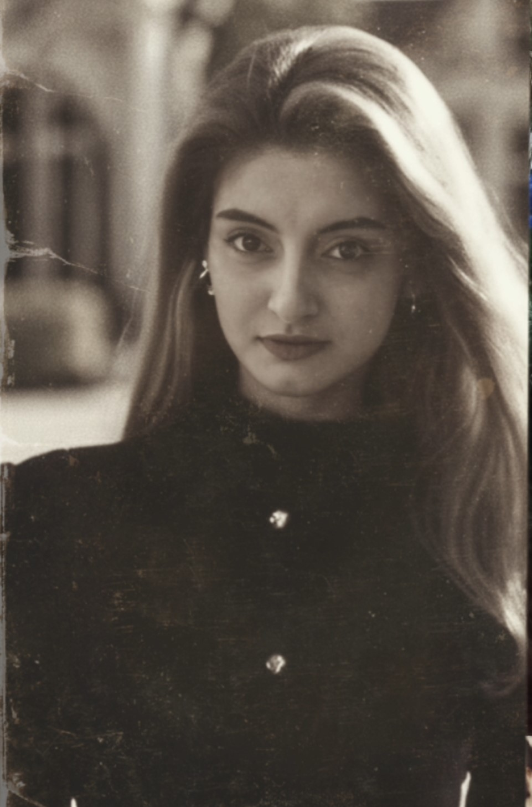

Nadezhda Kondel
About Me
I am 30 years old. I'm married. I was born in the city of Baranovichi, now I live in the city of Brest. My goal is to live a good life, see the world and gain financial freedom.
Contacts for communication:
+375 29 5195198 ( viber, Telegram, WhatsApp)
Skills
In searching for my “dream job,” I not only gained experience, but also developed the ability to recognize my own and other people’s feelings, as well as the ability to think critically. I quickly find non-standard ways to achieve goals.
Code Example
(const square = (num) => {
return num * num;
};)
Experience
Education
In 2015 she graduated from Grodno State University. Ya. Kupala, majoring in economics.
Languages
- English level – A1.
- German level - A2.
- Polish level - A1.